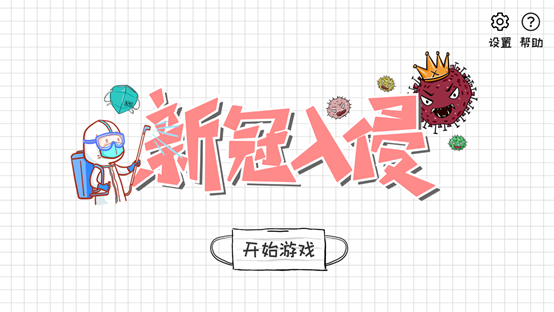
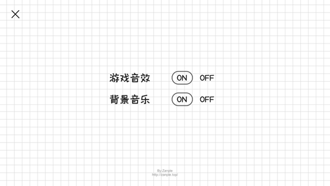
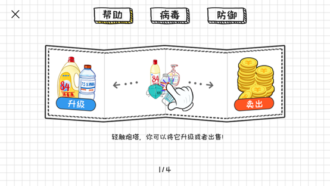
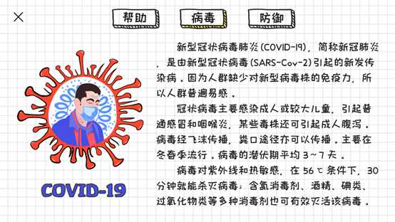
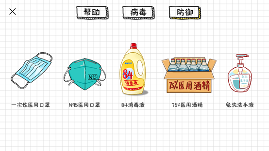
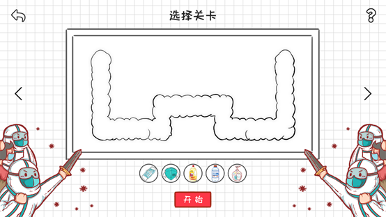
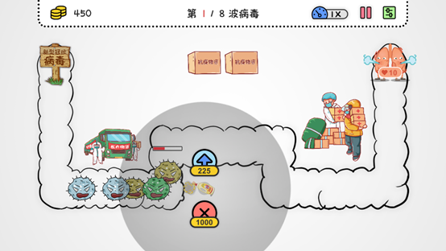
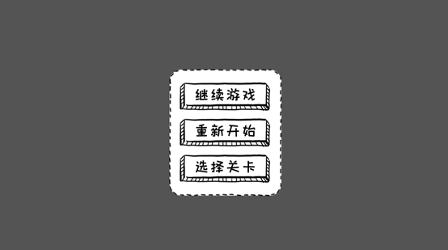

利用Unity独立开发的一个塔防类的小游戏~
1. 游戏简介 《新冠入侵》是一个基于安卓平台开发的抗击新冠疫情的小游戏，使用了Unity2019.3.3f1进行游戏的开发、Adobe Photoshop CC 2019完成美术资源的设计。
游戏技术点包含常用设计模式辅助项目开发（单例，工厂，对象池，中介者，外观，状态，责任链 等模式），DoTween插件的使用方法，使用JsonMapper去解析和存贮简单json与复杂json，json的使用注意事项与强制解析。编辑器拓展功能来制作地图工具（提高我们游戏开发效率，自己制作一个简单插件）。还有更多细碎知识诸如数值策划知识，游戏物体在Inspector的调整，2D开发中常遇到问题的展现与解决，面向接口编程的使用与体验，对象池技术，Unity的2D图集处理，并切割出一张张小图片。Unity中赋值顺序探索等等。
2. 游戏需求与流程
3. 美术资源设计 3.1 按钮设计 按钮与游戏标题保持风格一致性，大部分为手绘风格，并使用鲜明的颜色。由于本游戏是针对安卓平台开发的，因此按钮只需要常规与Press状态，Press状态大多使用阴影表现。
3.2 页面设计 按页面整体均为卡通手绘风格，使游戏能够有较大的用户群体。








4. 游戏设计模式与玩法机制 4.1 设计模式 本游戏综合使用了多种游戏设计模式。包括单例模式、工厂模式、对象池模式、外观模式、中介者模式、建造者模式、责任链模式。
单例模式： 单例模式是一种常见的设计模式，具有以下特点：单例类只能有一个实例、单例类必须自己创建自己的唯一实例、单例类必须给所有其他对象提供这一实例。单例模式为一个面向对象的应用程序提供了对象惟一的访问点，不管它实现何种功能，整个应用程序都会同享一个实例对象。工厂模式： 工厂模式主要是为创建对象提供过渡接口，以便将创建对象的具体过程屏蔽隔离起来，达到提高灵活性的目的。对象池模式： 对象池技术在第一次创建的时候就将对象存储在一个池子中，当需要销毁的时候不直接销毁而是隐藏，当需要时在再次使用，就不需要再次实例化一个新的对象，直接把隐藏的对象显示并拿出来用。如果对象池中已经被隐藏的物体太久没有被重新使用，应该被真正的销毁。外观模式： 外观模式中，一个子系统的外部与其内部的通信通过一个统一的外观类进行，外观类将客户类与子系统的内部复杂性分隔开，使得客户类只需要与外观角色打交道，而不需要与子系统内部的很多对象打交道。中介者模式： 中介者模式是一种比较常用的模式,一个中介者对象封装一系列的对象交互，中介者使各对象不需要显示地相互作用，从而使耦合松散，而且可以独立地改变它们之间的交互。建造者模式** ：**建造者模式是将一个复杂的对象的构建与它的表示分离，使得同样的构建过程可以创建不同的表示。责任链模式： 责任链模式使多个对象都有机会处理请求，从而避免请求的发送者和接受者之间的耦合关系，将这个对象连成一条链，并沿着这条链传递该请求，直到有一个对象处理他为止。
4.2 玩法机制 游戏初始状态下玩家拥有800枚金币，且有10点生命值。当玩家金币不足以建塔时玩家可以通过击杀病毒或打开场景中的道具来获得金币；病毒每个成功入侵玩家的生命值将会减少1点，生命值为0则游戏失败并结束。当玩家成功击退所有波次的病毒则获胜。
- 病毒等级数值：
ID/等级 病毒 生命值 移动速度 击杀奖励
1
100
1
50
2
200
2
100
3
300
3
150
4
400
4
200
5
500
5
250
6
600
6
300
- 炮塔等级数值： 根据防疫物品的特征：口罩有阻挡新冠病毒传播的能力，而84消毒液、75%医用酒精、含酒精洗手液有杀死病毒的能力。按照这些特征来设定游戏中塔的能力。
ID 等级 建塔价格 卖出价格 攻击CD 攻击范围 攻击速度 攻击伤害 攻击Buff
1
1
100
50
1.5
2
2
50
0.12
2
150
75
1
4
3
60
0.48
3
225
113
0.8
6
4
80
1.08
2
1
120
60
1
2
3
50
0.12
2
180
90
0.8
4
4
60
0.48
3
270
135
0.6
6
5
100
1.08
3
1
140
70
2
2
5
50
-
2
150
75
1.5
4
6
60
-
3
225
136
1
4
7
80
-
4
1
160
80
1.5
2
6
70
-
2
240
120
1.1
4
7
80
-
3
360
180
0.9
6
7
100
-
5
1
160
80
1.2
7
2
70
-
2
240
120
1
8
3
80
-
3
360
180
0.8
9
4
90
-
（buff为减速buff，表中的buff值由减速大小×减速时长的结果）
- 道具： 游戏中道具的血量为800，打开道具后可获得1000金币的奖励，并且原来被道具占据的位置也可进行建塔操作。
- 集火： 玩家可选定集火目标，目标可以是病毒和道具。选定目标后在防御塔的攻击范围内的塔会对目标进行集火攻击。
- 自动攻击： 防御塔会自动攻击并跟踪进入其攻击范围内的病毒，可以通过升级塔来扩大攻击范围等能力。
- 防御塔操作： 玩家可以在规定区域内建塔，其中道具所在位置和怪物入侵道路不可建塔。点击需要建塔的位置将展开建塔列表，再次点击可以收起建塔列表。点击已建的防御塔可以查看该塔目前是否可以升级，同时也可以看到塔的攻击范围。此外，玩家可以点击暂停后进行建塔，建塔完成后再点击继续。
- 病毒入侵： 每波病毒只会在上一波病毒以完全消灭/成功入侵后开始入侵。
5. UML图
6. UI部分技术总结 因为整个游戏项目的代码比较多，所以就只总结一些复用性比较高的部分内容。
6.1 DoTween插件的缓动函数 本游戏使用 DoTween插件来配置UI动画，缓动函数指定动画效果在执行时的速度，用于控制动画从初始值运动到最终值的速率。
DoTween的其他内容在上一篇文章已经总结过了，这里就不再赘述了。
游戏中的帮助页面与选择关卡界面都使用了Scroll View 组件。在Scroll View中，当需要在小区域显示占用大量空间的内容时，可以使用Scroll Rect。滚动矩形提供了滚动浏览此内容的功能。
Content：这是对用户界面要滚动的元素，例如大图像。
Horizontal/ Vertical：启用水平/垂直滚动。
Movement Type：无限制，弹性或夹紧。使用“弹性”或“夹紧”可将内容强制保留在“滚动矩形”的范围内。弹性模式在到达滚动矩形的边缘时会反弹内容。
Elasticity：弹性模式下使用的弹跳量。
Inertia：设置惯性后，拖动鼠标后释放指针，内容将继续移动。如果未设置惯性，则内容仅在拖动时才会移动。当使用DoTween插件来配置滚动动画时会产生冲突，需要关闭该选项。
Deceleration Rate：设置惯性后，减速率将决定对象停止移动的速度。0将立即停止运动。值为1表示运动永远不会减速。
Scroll Sensitivity：对滚轮和触控板滚动事件的敏感性。
Viewport：引用作为内容Rect变换父级的视口Rect变换。
Scrollbar：对滚动条元素的可选引用，可以设置滚动条的隐藏属性和滚动条与视口的空间大小。
6.3 GridLayoutGroup组件 游戏中的帮助页面与选择关卡界面都使用了Scroll View 组件。在Scroll View的Content中通常会使用GridLayoutGroup组件来使内容的填充更有序。
Cell Size：Content中每个单位的宽高；
Spacing：每个单位的间隔；
Start Corner：开始的位置，如Upper Left则为从左上角开始排列；
Start Axis：排列形式，分为水平排列和垂直排列；
Child Alignment：排列方式，如Upper Center则为居中靠上排列；
Constraint：约束，可选择行约束、列约束和无约束；
Padding：Content整体偏移量。
6.4 翻页效果的实现思路 游戏中的帮助页面与选择关卡界面都需要实现翻页效果。是要翻一页或者多页，使用的方法是让ScrollView用它自身长度的单位化比例来实现。为实现这个需求我们首先需要：
①content的总长
②玩家鼠标的开始位置与结束位置，并根据开始滑动与结束滑动的事件方式计算差值。若开始位置-结束位置>0，则右滑；若开始位置-结束位置<0，则左滑。通过差值来决定滑动几个单元格。
③移动一个单元格玩家鼠标需要滑动的距离（一个单元格长度+左偏移量） 。
④移动多个单元格玩家鼠标需要滑动的距离。其中第一个是单元格长度+左偏移量，之后的每一个滑动都是单元格长度+间隔。
⑤滑动一个单元格所占的比例，可通过一个单元格所在位置中点的长度/Content的总长度 得到。其中上限值与下限值为防止超过我们的最小长度与最大长度。
最后，可以推算出Content宽度与单元格长度与数量的关系式：
宽度=原来的宽度+（每一个单元格长度+间隙）*（单元格数量-1）
6.5 单页效果的实现 本游戏中，翻页效果的实现分为单页效果（每次只能滑动一个页面）和多页效果（一次可以滑动多个页面）。其中单页效果通过使用改变局部坐标 的方法实现脚本的成员变量来实现。
1 2 3 4 5 6 7 8 9 10 11 12 13 14 15 16 17 18 19 20 21 22 23 24 25 26 27 28 29 30 31 32 33 34 35 36 37 38 39 40 41 42 43 44 45 46 47 48 49 50 51 52 53 54 55 56 57 58 59 60 61 62 63 64 65 66 67 68 69 70 71 72 73 74 75 76 77 78 79 80 81 82 83 84 85 86 87 88 89 90 91 92 93 94 95 96 97 98 99 100 101 102 103 104 105 106 107 108 109 110 111 112 113 114 115 116 117 118 119 120 121 122 123 124 125 126 127 128 129 130 131 132 133 134 135 136 137 138 139 140 141 142 143 144 145 146 147 148 149 150 151 152 153 154 155 156 157 158 159 160 161 162 163 164 165 166 167 168 169 170 171 172 173 174 175 176 177 178 179 180 181 182 183 184 185 186 187 188 189 190 191 using System.Collections; using System.Collections.Generic; using UnityEngine; using UnityEngine.UI; using UnityEngine.EventSystems; using DG.Tweening; /// <summary> /// 单滑 /// </summary> public class SlideScrollView : MonoBehaviour,IBeginDragHandler,IEndDragHandler { private RectTransform contentTrans; private float beginMousePositionX; private float endMousePositionX; private ScrollRect scrollRect; public int cellLength; public int spacing; public int leftOffset; private float moveOneItemLength; private Vector3 currentContentLocalPos;//上一次的位置 private Vector3 contentInitPos;//Content初始位置 private Vector2 contentTransSize;//Content初始大小 public int totalItemNum; private int currentIndex; public Text pageText; public bool needSendMessage; private void Awake() { scrollRect = GetComponent<ScrollRect>(); contentTrans = scrollRect.content; moveOneItemLength = cellLength + spacing; currentContentLocalPos = contentTrans.localPosition; contentTransSize = contentTrans.sizeDelta; contentInitPos = contentTrans.localPosition; currentIndex = 1; if (pageText != null) { pageText.text = currentIndex.ToString() + "/" + totalItemNum; } } public void Init() { currentIndex = 1; if (contentTrans!=null) { contentTrans.localPosition = contentInitPos; currentContentLocalPos = contentInitPos; if (pageText != null) { pageText.text = currentIndex.ToString() + "/" + totalItemNum; } } } /// <summary> /// 通过拖拽与松开来达成翻页效果 /// </summary> /// <param name="eventData"></param> public void OnEndDrag(PointerEventData eventData) { endMousePositionX = Input.mousePosition.x; float offSetX = 0; float moveDistance = 0;//当次需要滑动的距离 offSetX = beginMousePositionX - endMousePositionX; if (offSetX>0)//右滑 { if (currentIndex>=totalItemNum) { return; } if (needSendMessage) { UpdatePanel(true); } moveDistance = -moveOneItemLength; currentIndex++; } else//左滑 { if (currentIndex<=1) { return; } if (needSendMessage) { UpdatePanel(false); } moveDistance = moveOneItemLength; currentIndex--; } if (pageText != null) { pageText.text = currentIndex.ToString() + "/" + totalItemNum; } DOTween.To(()=>contentTrans.localPosition,lerpValue=>contentTrans.localPosition=lerpValue,currentContentLocalPos+new Vector3(moveDistance,0,0),0.5f).SetEase(Ease.OutQuint); currentContentLocalPos += new Vector3(moveDistance, 0, 0); //只能存在于此项目 GameManager.Instance.audioSourceManager.PlayPagingAudioClip(); } /// <summary> /// 按钮来控制翻书效果 /// </summary> public void ToNextPage() { float moveDistance = 0; if (currentIndex>=totalItemNum) { return; } moveDistance = -moveOneItemLength; currentIndex++; if (pageText!=null) { pageText.text = currentIndex.ToString() + "/" + totalItemNum; } if (needSendMessage) { UpdatePanel(true); } DOTween.To(() => contentTrans.localPosition, lerpValue => contentTrans.localPosition = lerpValue, currentContentLocalPos + new Vector3(moveDistance, 0, 0), 0.5f).SetEase(Ease.OutQuint); currentContentLocalPos += new Vector3(moveDistance, 0, 0); } public void ToLastPage() { float moveDistance = 0; if (currentIndex <=1) { return; } moveDistance = moveOneItemLength; currentIndex--; if (pageText != null) { pageText.text = currentIndex.ToString() + "/" + totalItemNum; } if (needSendMessage) { UpdatePanel(false); } DOTween.To(() => contentTrans.localPosition, lerpValue => contentTrans.localPosition = lerpValue, currentContentLocalPos + new Vector3(moveDistance, 0, 0), 0.5f).SetEase(Ease.OutQuint); currentContentLocalPos += new Vector3(moveDistance, 0, 0); } public void OnBeginDrag(PointerEventData eventData) { beginMousePositionX = Input.mousePosition.x; } //设置Content的大小 public void SetContentLength(int itemNum) { contentTrans.sizeDelta = new Vector2(contentTrans.sizeDelta.x+(cellLength+spacing)*(itemNum-1),contentTrans.sizeDelta.y); totalItemNum = itemNum; } //初始化Content的大小 public void InitScrollLength() { contentTrans.sizeDelta = contentTransSize; } //发送翻页信息的方法 public void UpdatePanel(bool toNext) { if (toNext) { gameObject.SendMessageUpwards("ToNextLevel"); } else { gameObject.SendMessageUpwards("ToLastLevel"); } } }
6.6 多页效果的实现 本游戏中，翻页效果的实现分为单页效果（每次只能滑动一个页面）和多页效果（一次可以滑动多个页面）。其中多页效果通过使用比例 方法来实现。
1 2 3 4 5 6 7 8 9 10 11 12 13 14 15 16 17 18 19 20 21 22 23 24 25 26 27 28 29 30 31 32 33 34 35 36 37 38 39 40 41 42 43 44 45 46 47 48 49 50 51 52 53 54 55 56 57 58 59 60 61 62 63 64 65 66 67 68 69 70 71 72 73 74 75 76 77 78 79 80 81 82 83 84 85 86 87 88 89 90 91 92 93 94 95 96 97 98 99 100 101 102 103 104 105 106 107 108 109 110 111 112 113 114 115 116 117 118 119 120 121 122 123 124 using System.Collections; using System.Collections.Generic; using UnityEngine; using UnityEngine.UI; using UnityEngine.EventSystems; using DG.Tweening; public class SlideCanCoverScrollView : MonoBehaviour,IBeginDragHandler,IEndDragHandler { private float contentLength;//容器长度 private float beginMousePostionX; private float endMousePositionX; private ScrollRect scrollRect; private float lastProportion;//上一个位置比例 public int cellLength;//每个单元格长度 public int spacing;//间隙 public int leftOffset;//左偏移量 private float upperLimit;//上限值 private float lowerLimit;//下限值 private float firstItemLength;//移动第一个单元格的距离 private float oneItemLength;//滑动一个单元格需要的距离 private float oneItemProportion;//滑动一个单元格所占比例 public int totalItemNum;//共有几个单元格 private int currentIndex;//当前单元格索引 public Text pageText; private void Awake() { scrollRect = GetComponent<ScrollRect>(); contentLength = scrollRect.content.rect.xMax - 2 * leftOffset - cellLength; firstItemLength = cellLength / 2 + leftOffset; oneItemLength = cellLength + spacing; oneItemProportion = oneItemLength / contentLength; upperLimit=1- firstItemLength / contentLength; lowerLimit = firstItemLength / contentLength; currentIndex = 1; scrollRect.horizontalNormalizedPosition = 0; if (pageText != null) { pageText.text = currentIndex.ToString() + "/" + totalItemNum; } } public void Init() { lastProportion = 0; currentIndex = 1; if (scrollRect != null) { scrollRect.horizontalNormalizedPosition = 0; pageText.text = currentIndex.ToString() + "/" + totalItemNum; } } public void OnEndDrag(PointerEventData eventData) { float offSetX = 0; endMousePositionX = Input.mousePosition.x; offSetX = (beginMousePostionX - endMousePositionX)*2; //Debug.Log("offSetX:" + offSetX); //Debug.Log("firstItemLength:" + firstItemLength); if (Mathf.Abs(offSetX)>firstItemLength)//执行滑动动作的前提是要大于第一个需要滑动的距离 { if (offSetX>0)//右滑 { if (currentIndex>=totalItemNum) { return; } int moveCount = (int)((offSetX - firstItemLength) / oneItemLength) + 1;//当次可以移动的格子数目 currentIndex += moveCount; if (currentIndex>=totalItemNum) { currentIndex = totalItemNum; } //当次需要移动的比例:上一次已经存在的单元格位置 //的比例加上这一次需要去移动的比例 lastProportion += oneItemProportion * moveCount; if (lastProportion>=upperLimit) { lastProportion = 1; } } else //左滑 { if (currentIndex <=1) { return; } int moveCount = (int)((offSetX + firstItemLength) / oneItemLength) - 1;//当次可以移动的格子数目 currentIndex += moveCount; if (currentIndex <=1) { currentIndex = 1; } //当次需要移动的比例:上一次已经存在的单元格位置 //的比例加上这一次需要去移动的比例 lastProportion += oneItemProportion * moveCount; if (lastProportion <= lowerLimit) { lastProportion = 0; } } if (pageText!=null) { pageText.text = currentIndex.ToString() + "/" + totalItemNum; } } DOTween.To(() => scrollRect.horizontalNormalizedPosition, lerpValue => scrollRect.horizontalNormalizedPosition = lerpValue, lastProportion, 0.5f).SetEase(Ease.OutQuint); GameManager.Instance.audioSourceManager.PlayPagingAudioClip(); } public void OnBeginDrag(PointerEventData eventData) { beginMousePostionX = Input.mousePosition.x; } }
6.7 UI实例化 游戏中需要不断地将不同的UIPanel实例化到Canvas下进行显示。但是由于使用工厂模式，在实例化时会遇到UIPanel先实例化到Hierarchy中再设置其父对象。此时UIPanel的锚点就不是以Canvas的大小为准。
解决这个问题可以通过将锚点由原来的“包裹父对象”更改为“居中显示”，并在实例化时在设置其父对象为Canvas后将对应Panel的Pos改为0，Scale改为1即可解决。
UIPanel通过添加到UI管理字典，实例化当前场景所有面板，并存入字典。
1 2 3 4 5 6 7 8 9 10 11 12 13 14 15 16 17 18 19 20 21 22 23 24 25 26 27 28 29 30 31 //实例化当前场景所有面板，并存入字典 public void InitDict() { foreach (var item in mUIManager.currentScenePanelDict) { item.Value.transform.SetParent(canvasTransform); item.Value.transform.localPosition = Vector3.zero; item.Value.transform.localScale = Vector3.one; IBasePanel basePanel = item.Value.GetComponent<IBasePanel>(); if (basePanel == null) { Debug.Log("获取面板上IBasePanel脚本失败"); } basePanel.InitPanel(); //Debug.Log(item.Key); currentScenePanelDict.Add(item.Key, basePanel); } } //清空UIPanel字典 public void ClearDict() { currentScenePanelDict.Clear(); mUIManager.ClearDict(); } //添加UIPanel到UIManager字典 public void AddPanelToDict(string uiPanelName) { mUIManager.currentScenePanelDict.Add(uiPanelName, GetGameObjectResource(FactoryType.UIPanelFactory, uiPanelName)); }
6.8 克隆体名称问题与字符串截取 游戏中实例化对象时，Instance方法会使用Perfabs的克隆体。因此实例化的对象会有(Clone)的后缀，在将对象放回对象池时会产生报空操作。解决这个问题的方法只需要对对象的名称进行截取，使用Substring()函数即可解决。
Substring的使用方法有两种：
一是Substring(int startIndex) ，子字符串从指定的字符位置（第startIndex个字符）开始，一直到此字符串末尾。
二是Substring(int startIndex, int length) ，子字符串从指定的字符位置第startIndex个字符）开始，且具有指定的长度（子字符串的长度length）。
6.9 控制渲染顺序 游戏中直接通过工厂实例化的对象的渲染顺序会出现错误的遮挡关系，可以通过Transform.SetSiblingIndex(i)来控制渲染顺序。I越大则对象越后渲染。
6.10 主面板的左右移动动画 1 2 3 4 5 6 7 8 9 10 11 12 13 14 15 16 17 18 19 20 21 22 23 24 25 26 27 28 29 30 31 32 33 34 35 36 37 38 39 40 41 42 43 44 45 46 47 48 49 50 51 52 53 54 55 56 57 58 59 60 61 62 63 using System.Collections; using System.Collections.Generic; using UnityEngine; using DG.Tweening; public class MainPanel : BasePanel { private Tween[] mainPanelTween;//0.右，1.左 private Tween ExitTween;//离开主页运行的动画 protected override void Awake() { base.Awake(); //获取成员变量 transform.SetSiblingIndex(8); mainPanelTween = new Tween[2]; mainPanelTween[0] = transform.DOLocalMoveX(1920, 0.5f); mainPanelTween[0].SetAutoKill(false); mainPanelTween[0].Pause(); mainPanelTween[1] = transform.DOLocalMoveX(-1920, 0.5f); mainPanelTween[1].SetAutoKill(false); mainPanelTween[1].Pause(); } public override void EnterPanel() { transform.SetSiblingIndex(8); if (ExitTween != null) { ExitTween.PlayBackwards(); } } public override void ExitPanel() { ExitTween.PlayForward(); } public void MoveToRight() { mUIFacade.PlayButtonAudioClip(); ExitTween = mainPanelTween[0]; mUIFacade.currentScenePanelDict[StringManager.SetPanel].EnterPanel(); } public void MoveToLeft() { mUIFacade.PlayButtonAudioClip(); ExitTween = mainPanelTween[1]; mUIFacade.currentScenePanelDict[StringManager.HelpPanel].EnterPanel(); } ////场景状态切换的方法 public void ToNormalModelScene() { mUIFacade.PlayButtonAudioClip(); mUIFacade.currentScenePanelDict[StringManager.GameLoadPanel].EnterPanel(); mUIFacade.ChangeSceneState(new NormalGameOptionSceneState(mUIFacade)); } }
6.11 帮助面板的页面切换 1 2 3 4 5 6 7 8 9 10 11 12 13 14 15 16 17 18 19 20 21 22 23 24 25 26 27 28 29 30 31 32 33 34 35 36 37 38 39 40 41 42 43 44 45 46 47 48 49 50 51 52 53 54 55 56 57 58 59 60 61 62 63 64 65 66 67 68 69 70 71 72 73 74 75 76 77 78 79 80 81 82 83 84 85 86 87 88 89 90 91 92 93 94 95 96 97 98 99 100 101 102 103 104 105 using System.Collections; using System.Collections.Generic; using UnityEngine; using DG.Tweening; using UnityEngine.SceneManagement; public class HelpPanel : BasePanel { private GameObject helpPageGo; private GameObject covidPageGo; private GameObject defendPageGo; private SlideScrollView slideScrollView; private Tween helpPanelTween; protected override void Awake() { base.Awake(); helpPageGo = transform.Find("HelpPage").gameObject; covidPageGo = transform.Find("CovidPage").gameObject; defendPageGo = transform.Find("DefendPage").gameObject; slideScrollView = transform.Find("HelpPage").Find("Scroll View").GetComponent<SlideScrollView>(); helpPanelTween = transform.DOLocalMoveX(0, 0.5f); helpPanelTween.SetAutoKill(false); helpPanelTween.Pause(); } //显示页面的方法 public void ShowHelpPage() { if (!helpPageGo.activeSelf) { mUIFacade.PlayButtonAudioClip(); helpPageGo.SetActive(true); } covidPageGo.SetActive(false); defendPageGo.SetActive(false); } public void ShowCovidPage() { mUIFacade.PlayButtonAudioClip(); helpPageGo.SetActive(false); covidPageGo.SetActive(true); defendPageGo.SetActive(false); } public void ShowDefendPage() { mUIFacade.PlayButtonAudioClip(); helpPageGo.SetActive(false); covidPageGo.SetActive(false); defendPageGo.SetActive(true); } //处理面板的方法 public override void InitPanel() { base.InitPanel(); transform.SetSiblingIndex(5); slideScrollView.Init(); ShowHelpPage(); //其他处理 if (transform.localPosition == Vector3.zero) { gameObject.SetActive(false); helpPanelTween.PlayBackwards(); } transform.localPosition = new Vector3(1920, 0, 0); } public override void EnterPanel() { base.EnterPanel(); gameObject.SetActive(true); slideScrollView.Init(); MoveToCenter(); } public override void ExitPanel() { base.ExitPanel(); mUIFacade.PlayButtonAudioClip(); //选择场景 if (mUIFacade.currentSceneState.GetType() == typeof(NormalGameOptionSceneState)) { mUIFacade.ChangeSceneState(new MainSceneState(mUIFacade)); SceneManager.LoadScene(1); } else//如果是在主场景 { helpPanelTween.PlayBackwards(); mUIFacade.currentScenePanelDict[StringManager.MainPanel].EnterPanel(); } } public void MoveToCenter() { helpPanelTween.PlayForward(); } }
7. 制图工具的实现 为了能过在工程中更方便快捷的开发游戏关卡地图，自定义了一个制图工具并使用宏（Tool）来将工具代码和游戏（Game）代码进行区分。将游戏场景划为6行12列，并将绘制好的地图保存为json文件。
单击地图中的格子将该位置设为不可建塔区域，按住P键单击地图中的格子将该位置设为病毒入侵路径（路径按照点击顺序，只需要在起始点和转角区域点击即可），按住I键单击地图中的格子将该位置设为道具位置，多次点击可以切换道具（道具1占据1格，道具2占据2格，道具3占据4格）。
Level为当前编辑的地图关卡，可手动设置。Round Info List为病毒波次以及每波怪物的设置。编辑完当前关卡的地图后可点击“保存当前关卡数据”将关卡数据保存为json文件，保存后的关卡数据可以再次读取编辑。
8. 游戏主逻辑 8.1 产怪逻辑
Level对象控制round责任链的执行。
具体产怪的逻辑是通过round去执行的，round里存有本回合需要产生的怪物数量与ID，之后会把这些内容传入GameController去调用Invoke方法延时。
循环产生病毒。(把产怪方法封装在CameContoller里，而不是直接在round里去完成这个方法的原因:①需要延时循坏调用方法InvokeRepeating，它是Mono里的方法。②很多游戏逻辑类与信息存贮在了GameController里，所以我们必须这样去设计)。
但在生成病毒的时候，会出现玩家暂停产生病毒去建塔的情况，所以需要通过调用GameController的停止方法去停止延时调用。并且需要随时去打开。因此将暂停开关的监听放在Update方法里。
每次调用产怪方法的时候都需要去判断一下当前产怪是否完成当次回合的产怪总数，完成则停止。否则让产怪索引去累加。
即时监听玩家的杀怪数量。如果杀怪数量一旦等于当次回合怪物的总数，便调用level里的有关方法、把当前任务交给责任链的下一环，即进入下一个回合。每次调用Level有关方法的时候会判断责任链是否到达最后一环，如果到达，则显示最后一波有关逻辑，如果超过，则游戏胜利。
8.2 炮塔搜索目标的有关逻辑

8.3 建塔列表的优化 游戏中建塔列表如下图。如果不对其进行优化列表在左边缘、右边缘和上边缘都不能完整显示。同理，销售与升级按钮也有这样的问题。因此需要对建塔列表与塔操作UI进行纠正。
1 2 3 4 5 6 7 8 9 10 11 12 13 14 15 16 17 18 19 20 21 22 23 24 25 26 27 28 29 30 31 32 33 34 35 36 37 38 39 40 41 42 43 44 45 46 47 48 49 50 51 52 53 54 55 56 57 58 59 //纠正建塔列表的位置 private Vector3 CorrectTowerListGoPosition() { Vector3 correctPosition = Vector3.zero; if (gridIndex.xIndex <= 3 && gridIndex.xIndex >= 0) { correctPosition += new Vector3(gameController.mapMaker.gridWidth, 0, 0); } else if (gridIndex.xIndex <= 11 && gridIndex.xIndex >= 8) { correctPosition -= new Vector3(gameController.mapMaker.gridWidth, 0, 0); } if (gridIndex.yIndex <= 2 && gridIndex.yIndex >= 0) { correctPosition += new Vector3(0, gameController.mapMaker.gridHeight, 0); } else if (gridIndex.yIndex <= 5 && gridIndex.yIndex >= 3) { correctPosition -= new Vector3(0, gameController.mapMaker.gridHeight, 0); } correctPosition += transform.position; return correctPosition; } //纠正操作塔UI画布的方法(纠正按钮位置的方法) private void CorrectHandleTowerCanvasGoPosition() { upLevelButtonTrans.localPosition = Vector3.zero; sellTowerButtonTrans.localPosition = Vector3.zero; if (gridIndex.yIndex <= 0) { if (gridIndex.xIndex == 0) { sellTowerButtonTrans.position += new Vector3(GameController.Instance.mapMaker.gridWidth * 3 / 4, 0, 0); } else { sellTowerButtonTrans.position -= new Vector3(GameController.Instance.mapMaker.gridWidth * 3 / 4, 0, 0); } upLevelButtonTrans.localPosition = upLevelButtonInitPos; } else if (gridIndex.yIndex >= 4) { if (gridIndex.xIndex == 0) { upLevelButtonTrans.position += new Vector3(GameController.Instance.mapMaker.gridWidth * 3 / 4, 0, 0); } else { upLevelButtonTrans.position -= new Vector3(GameController.Instance.mapMaker.gridWidth * 3 / 4, 0, 0); } sellTowerButtonTrans.localPosition = sellTowerButtonInitPos; } else { upLevelButtonTrans.localPosition = upLevelButtonInitPos; sellTowerButtonTrans.localPosition = sellTowerButtonInitPos; } }
8.4 防御塔跟随目标朝向 游戏中防御塔会跟随攻击目标旋转，这里使用的是Transform.LookAt()，但该函数在使用时会出现一个问题：由于塔与怪物不在同一层级上（深度不同），因此使用LookAt()函数会出现三维坐标上的旋转问题，投射到二维摄像机则会出现对象变形的情况。 通过判定条件设置其x与y轴坐标即可修复。
1 2 3 4 5 6 7 8 9 10 11 12 13 14 15 //旋转 //transform.LookAt(targetTrans); if (targetTrans.gameObject.tag == "Item") { transform.LookAt(targetTrans.position + new Vector3(0, 0, 3)); } else { transform.LookAt(targetTrans.position); } if (transform.eulerAngles.y == 0) { transform.eulerAngles += new Vector3(0, 90, 0); }
9. 总结 游戏目前仍有一些不足点，例如：
关卡少，还未设计其他关卡；
防御塔目前虽然有5种，但其攻击形式只有2种；
未实现游戏数据的存储功能；
未适配移动端的全面屏；
游戏的数值设计还不够科学。